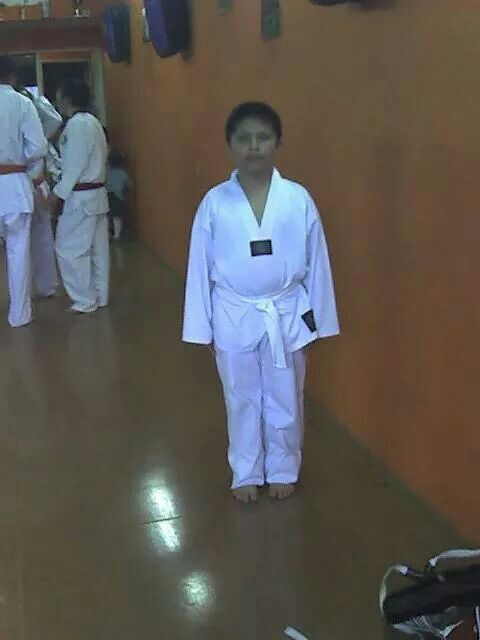
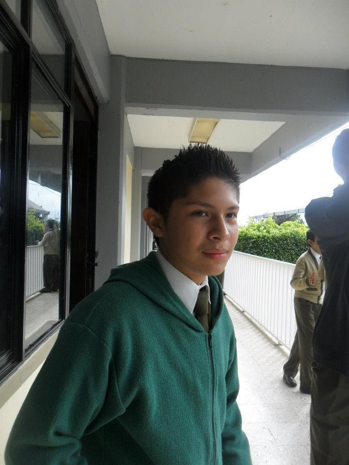

C.B.T.i.s #86
Mi nombre es Juan Ángel Hernández Zaragoza nací en Huauchinango, Puebla; en el centro de salud de Huauchinango, mis padres son Juan Hernández Rivera e Isabel Zaragoza Morales, desde que nací hasta los 15 años viví en la colonia Benito Juárez, en la calle General Guadalupe Victoria #6.
Fui al kínder CENDI No. 4, entre a la edad de 3 años, recuerdo que en ocasiones mi abuelo pasaba por mí a la salida, no me gustaba comer en la escuela por lo cual las maestras no me dejaban ir hasta que me lo acabara todo, mis amigos eran los gemelos y muchos de los que fueron conmigo aún les hablo. El 17 de Marzo de 2004 nació mi única hermana Alma Angélica Hernández Zaragoza y ese mismo año yo termine el kínder.
En el 2004 entre a la primaria Alberto Jiménez Valderrábano con la edad de seis años, recuerdo que el primer día mis papás me llevaron a la escuela y veía como los otros niños lloraban y me reía, estaba en el grupo B donde conocí a mi mejor amigo que hasta la fecha lo es Luis Eduardo Baza Díaz. En tercero me cambiaron al grupo A donde iba mi prima Laura Deyanira Hernández Rodríguez también cambiaron a Baza y otros cuantos como Flor; ese mismo grado conocí a otro de mis mejores amigos Edgar Amaury Cardona Macías en un día cuando estaba jugando con Baza cartas de Yugiho y él se nos acercó y nos preguntó que no recuerdo, él era del grupo C pero al igual que a mí lo pasaron al grupo A.
En cuarto año no pasó nada interesante que recuerdo, pero mis papás nunca iban a las juntas porque trabajan en la mañana y ese tiempo solo los veía en la noche, pero una vez mi papá fue a una junta la verdad es que me alegro mucho que fuera. En quinto año casi no tuve clases por lo de la influenza y por las huelgas que hacían los maestros, así que no recuerdo casi nada. En sexto era mi último año y casi siempre jugábamos a las luchitas como los de la WWE en el salón y creo que para ese tiempo ya nos hablábamos todos y organizaba salidas al cine, entre varios fuimos a ver varias películas como: Iron Man 2, Toy Story 3, El hombre lobo, entre otras, casi al final del año hicimos un campamento y estuvo bien padre, y dormimos solamente dos horas. Fui hacer mi examen para entrar a la secundaria y fue como de los 18 mejores en hacerlo. En la clausura fue el vals y tuve mucha suerte porque me tocó bailar con Flor que me gusto desde quinto, pero ese mismo año salió mi hermana del kínder así que mi papá fue conmigo y mamá con mi hermana. La verdad es que la primaria para mí fue una época bonita porque conocí grandes personas y tuve muchos regaños de mis papás pero creo hasta el día de hoy estuvo bien.
Juan Ángel Hernández Zaragoza
C.B.T.i.s #86
 La secundaria la curse en la Niños Héroes de Chapultepec, fui la generación 2010-2013, fui en el grupo A, estuve en el taller de Dibujo Técnico con el profesor Gerardo Garrido Gonzales. En primer año recuerdo que casi no le hablaba a nadie solo a Amaury que le toco en el mismo salón que a mí, y Baza quedo en el E. Cuando entre no me costó trabajo acostumbrarme y saque unas buenas calificaciones y nos llevaron a Guanajuato, en ese viaje hice una amistad con algunos de tercero y también fue mi prima que iba en el grupo C, en especial gane uno de mis pocos mejores amigos Job de Jesús. De las cosas de las que cambie es que me gustaba raparme y al final del año termine por peinarme y adelgace bastante a como estaba en la primaria.
En segundo de secundaria lo definiría como el mejor año de toda la secundaria, cambie mucho mi personalidad y creo que fue para bien aunque baje de calificación pero valió la pena, ese año hice varias amistades la mayoría aun las conservo pero creo que las más importantes son: Salomón, Víctor Manuel y Liz. Ese mismo año tuve mi primera novia, fue Erandi y creo que es lo más bonito que me ha pasado ya que ella me hiso ver el mundo de otra forma, en ese entonces empezaba a salir más y tenía más permisos que antes, esto no se los conté a mis papás pero creo que al final se enteraron pero nunca me han dicho nada.
Tercero de Secundaria el último año, de las amistades que mejor me traen recuerdos son las de: Elia, Sinahi, Alan, Israel, Chucho, Emanuel, Ulises, Canseco, Alexandra, Salma y Raquel, ese año me compuse en calificaciones y tuve la oportunidad de viajar a Six Flax y fue muy bonito, en ese tiempo tenía una novia y le compre un Taz, el cual lo recuerdo mucho porque estaba muy bonito, ese año Salomón nos invitó a comer elotes en su casa y estaban muy ricos, creo que fue un bonito año porque le hablaba a mucha gente y salía mucho con Baza, una semana antes de la clausura fui un día a Veracruz, con mi prima Laura y su familia, el día de la clausura fue muy padre me dieron mi celular que actualmente lo conservo y accesorios para este, y fui a comer con mis papás y en la tarde salí con Ulises y Baza a dar unas vueltas y Ulises nos pasó a dejar a la casa de Alan donde tenía una comida.
Juan Ángel Hernández Zaragoza
C.B.T.i.s #86
En el 2013 ingrese al C.B.T.i.s 86 a la edad de 15 años, me toco en el grupo E, donde no conocía a casi nadie, la mayoría de mis amigos quedaron en la tarde, yo voy en Programación y actualmente voy en cuarto semestre. Justo antes de entrar a la escuela me mude a Santa Cruz, ya que antes vivía en la colonia Benito Juárez.
La escuela se me hace un poco pesada por las tareas pero los horarios los siento muy tranquilos ya que son horas seguidas y al día por mucho llevo tres materias. El mismo año que entre al C.B.T.i.s realice mi cinta negra en el estado de México, pasando mi examen con 8.5, para esto tuve que realizar tres exámenes uno físico, uno teórico y otro practico, el primer examen consistió en una carrera de 5 kilómetros en menos tiempo posible, el teórico fueron 20 preguntas sobre el taekwondo, y el practico fue todas las formas y técnicas aprendidas de blanca hasta negra.
Juan Ángel Hernández Zaragoza
C.B.T.i.s #86
Juan Ángel Hernández Zaragoza
C.B.T.i.s #86
 Me gustan los videojuegos, la comida, la música, las series, peliculas, anime, entrenar taekwondo. Me gusta salir con mis amigos y con mi familia, en mascotas me gustan los perros como el pastor aleman, a los 10 años tuve mi primera mascota y le llame manchas, actualmente sigue viva pero ya no vive conmigo.
Me gustan los videojuegos, la comida, la música, las series, peliculas, anime, entrenar taekwondo. Me gusta salir con mis amigos y con mi familia, en mascotas me gustan los perros como el pastor aleman, a los 10 años tuve mi primera mascota y le llame manchas, actualmente sigue viva pero ya no vive conmigo. Las series que mas me gustan son: Dr. House y Darevil; mi pelicula favorita es la de Avatar.
Juan Ángel Hernández Zaragoza